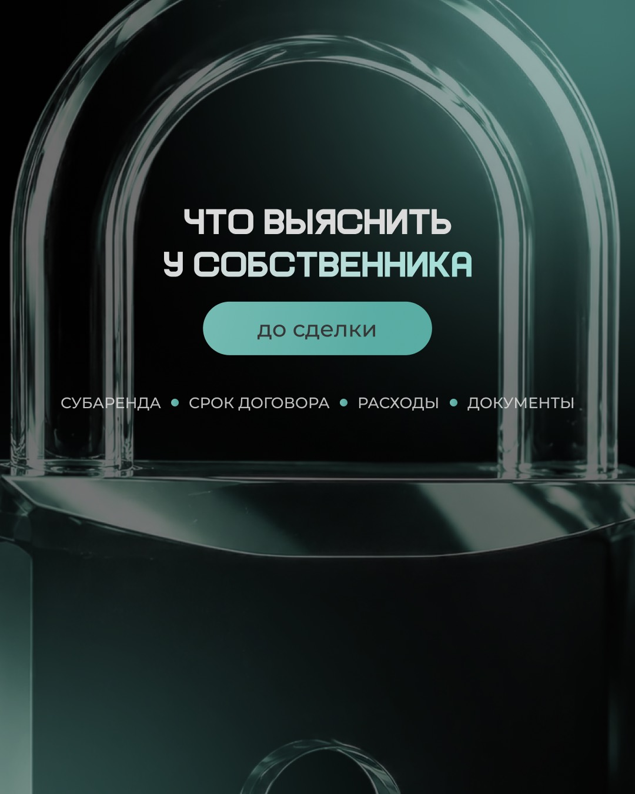
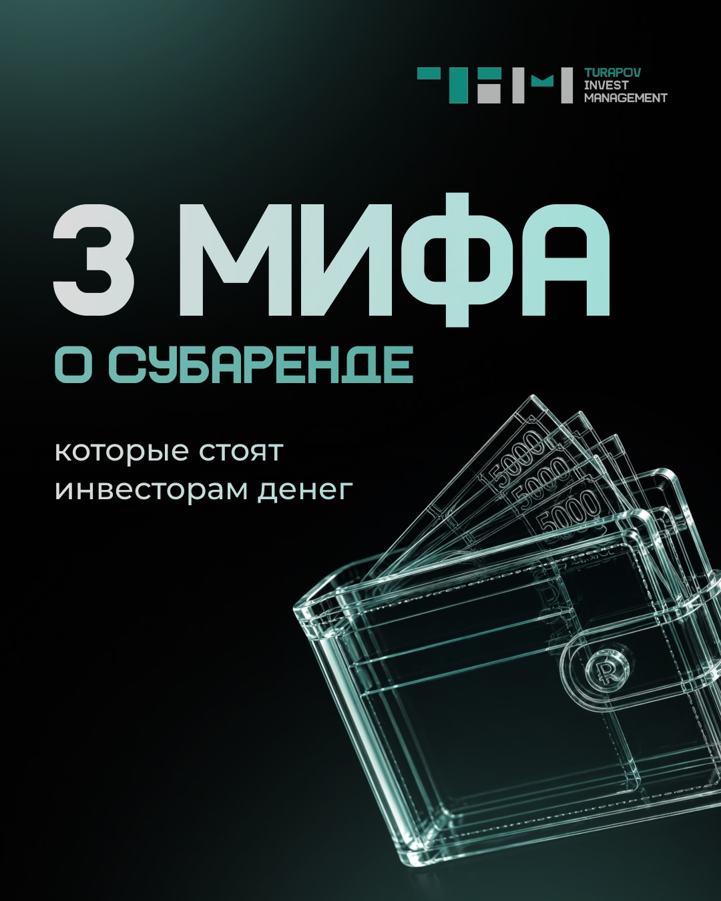

Коммерческая недвижимость · инвестиции · июль 2026
Как объяснить сложный инвестиционный продукт за один контент-месяц
Для Invest Management выстроили путь от вопроса «на чём здесь зарабатывают?» до понятного следующего шага: модельная экономика, лицо команды, реальные объекты, разбор рисков и два предложения.
Клиент утвердил контент‑план и финальный визуал.


Маркетинговая задача
Сначала сделать продукт понятным. Потом продавать
Субаренда коммерческой недвижимости незнакома большей части аудитории. Если начать с предложения, человек видит риск и сложную схему. Поэтому контент сначала объясняет механику, а затем доказывает управляемость процесса.
Что останавливает читателя
«Где доход — и где здесь риск?»
Нужны десятки миллионов?
Собственник разрешит?
Кто найдёт арендаторов?
Что, если один съедет?
Как выбрать объект?
Кто управляет процессом?
Что должен сделать профиль
Перевести неизвестность в последовательность решений
Модельный расчёт объясняет механику. Кейсы показывают практику. Лицо основателя и рабочие чек-листы добавляют доверие. Разбор мифов снимает барьеры — и только после этого появляется приглашение на экспертный разбор.
Логика месяца
Пять смысловых опор — по две публикации
Контент распределён равномерно: польза отвечает «как устроено», команда — «кому доверять», кейсы — «работает ли», мифы — «что с рисками», предложения — «что делать дальше».
Механика
Показать модель дохода и критерии выбора объекта.
Команда
Дать продукту лицо, опыт и понятную позицию.
Кейсы
Разобрать объект и тест спроса через конкретные шаги.
Возражения
Ответить на главные мифы и страх ротации арендаторов.
Предложение
Позвать на бесплатный разбор и рассказать о партнёрстве.
Польза
Экономика субГАБа и вопросы собственнику.
Команда
Личный выбор ниши и профессиональная среда.
Наши работы
Объект в Архангельске и проверка спроса.
Мифы
Собственник, капитал и ротация арендаторов.
Предложения
Экспертный разбор и формат партнёрства.
Продукт целиком
Весь комплект можно рассмотреть, а не поверить на слово
10 тем, 10 обложек, 14 слайдов двух каруселей, 5 сторис и отдельный пост-закреп. Нажмите на любой макет, чтобы открыть его крупно.
Исторические материалы проекта · июль 2026
Цифры, ставки, суммы и условия внутри клиентских макетов показаны только как часть выполненной работы. Они могут быть неактуальны и не являются финансовым советом, офертой или гарантией lemonmedia.
Маркетинговая архитектура
10 тем с отдельной ролью
В плане видно, как объяснение продукта, доверие, кейсы, снятие возражений и предложения чередуются внутри одного месяца.
Единая визуальная система
Технологичный стиль без шаблонной «биржевой» картинки
Тёмный фон, бирюзовый акцент, стеклянные 3D-объекты и реальные фотографии команды объединяют сложную тему в узнаваемый визуальный язык.
2 карусели · 14 слайдов
Кейс с цифрами и разбор трёх мифов
Первая карусель показывает структуру реального объекта. Вторая последовательно разбирает основные входные возражения.
Мини-прогрев из пяти кадров
От лежащего капитала — к экспертному разбору
Серия вводит незнакомый инструмент, показывает сложность процесса и ведёт к публикации с бесплатным разбором ситуации.
Сверх основного пакета
Пост-закреп встречает нового читателя
Он быстро объясняет, кому подходит профиль, как устроен продукт и с какого шага начать изучение.
Профиль становится понятным с первого экрана
- что такое субГАБ;
- для кого предназначен продукт;
- какие форматы работы существуют;
- почему начинать стоит с экспертного разбора.
Как собрали комплект
Маркетинг и визуал работали одной системой
Сначала зафиксировали вопросы аудитории и роли рубрик. Затем уточнили факты, внесли правки клиента, добавили реальные фотографии и собрали финальный дизайн.
Бриф
Определили продукт, аудиторию, площадки и цель регулярного контента.
Архитектура
Разложили месяц на пять смысловых ролей по две публикации.
Фактчекинг
Уточнили модельные цифры, детали объектов и формулировки экспертизы.
Визуал
Соединили графику, 3D-объекты и фотографии лица бренда.
Финал
Исправили точечные замечания, добавили истории и пост-закреп; комплект принят.
Результат проекта
Сам продукт уже можно проверить полностью
На странице видны объём, маркетинговая логика и все готовые материалы.
Что сделали
- утверждённый план на 10 публикаций;
- две карусели по семь слайдов;
- серия из пяти историй;
- дополнительный пост-закреп;
- 28 финальных изображений;
- финальный комплект принят клиентом.
Итог проекта
Кейс показывает готовый комплект для четырёх площадок. Коммерческие показатели не измерялись.
Расчёты, суммы и результаты объектов внутри макетов — содержание клиента. Они не являются доходом от работы lemonmedia, прогнозом или гарантией инвестиционной доходности.
У вас тоже сложный продукт?
Соберём контент, который сначала объясняет ценность — и только потом продаёт
Маркетолог выстраивает план и тексты, дизайнер собирает визуал, менеджер ведёт согласование и публикацию. 10 постов — 4 990 ₽; карусели и истории добавляются в конструкторе.